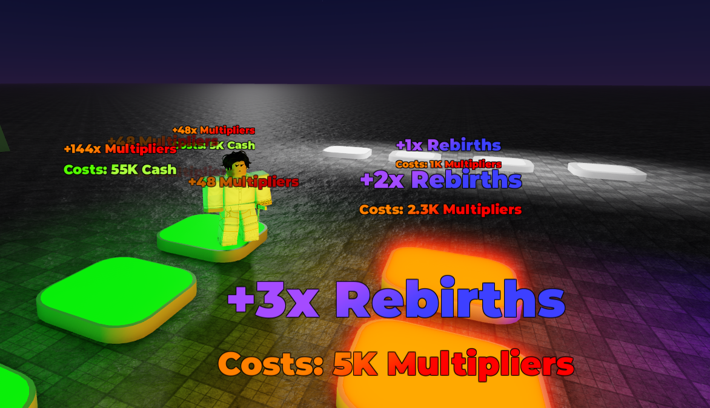

About Me
Hey, I'm LuaKetrix, a Roblox scripter with 1–2 years of experience working with Lua and creating interactive systems for games. I also have an intermediate level of UI/UX design skill, which helps me build more polished and user-friendly experiences.
I'm currently taking commissions to help fund future, larger-scale projects that I plan to build as I grow. I'm still learning every day, always improving, and doing my best to create meaningful and fun experiences on Roblox, as well as helping others.
Projects
Button Simulator Project:
 Play on Roblox
Play on Roblox
Genre: Progression-based Idle/AFK Simulator
Core Systems: Stat stacking, rebirth ladder, upgrade shop, auto transactions, custom GUI layout
Description:
Button Simulator is a layered incremental game where players step on buttons to earn and upgrade various stats. It features a progressive stat system with:
💵 Money (base currency)
✖️ Multiplier (increases money gain)
🔁 Rebirths (reset money/multiplier, increase multiplier gain)
💠 Fragments (reset previous stats, boost rebirth/multiplier gain)
⬆️ Ascensions (deep reset, boost everything below)
🎯 Points (permanent currency used for upgrades like +WalkSpeed or +Cash%)
Players can continuously stand on a button to trigger auto transactions without the Touched event — making the game fully AFK-friendly. Each button displays its cost and reward using a clean Billboard GUI.
The game features a custom leaderboard for the three core stats (Money, Multiplier, Rebirths), with Fragments and Ascensions shown in an "Extra Stats" panel, and Points/Upgrades managed through a dedicated GUI.
This system allows for a deep sense of progression through five layers of stat resets, while preserving long-term growth via permanent upgrades.

Skills
- Lua Scripting
- Intermediate UI/UX Design
- Common Sense
Contact
Discord: notepad3799 | Roblox: Ketrix_x